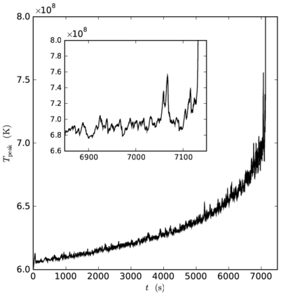
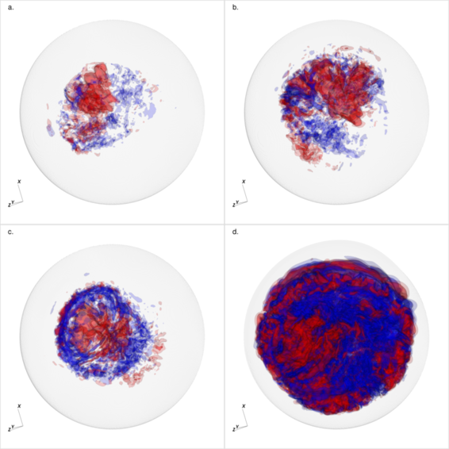
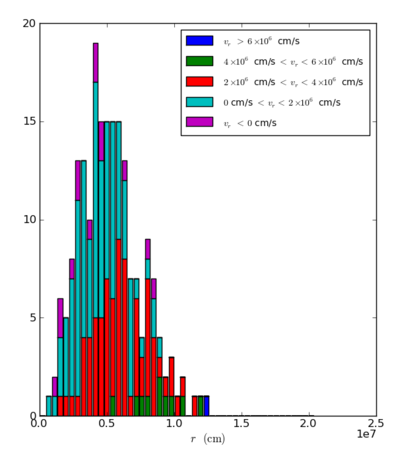
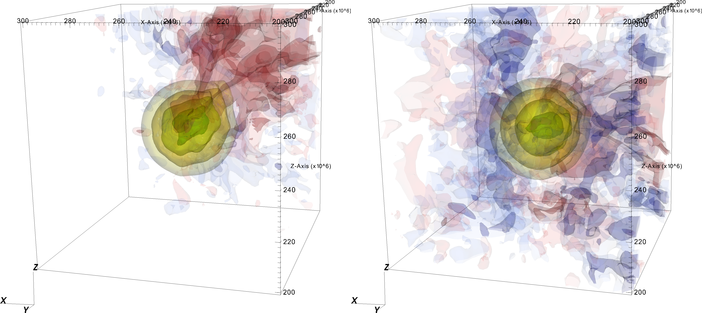
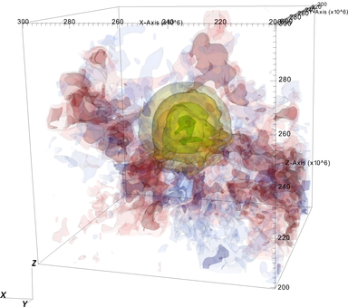
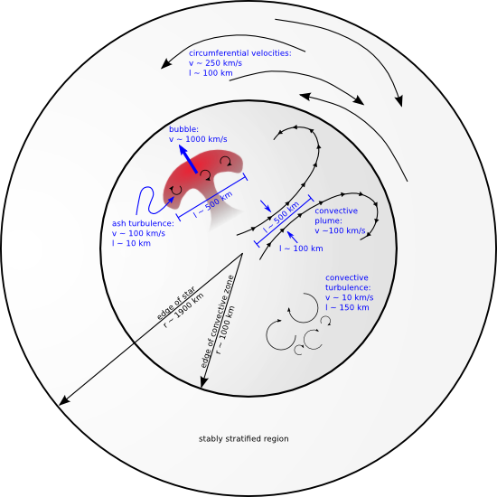

Mike Zingale (SUNY SB), Ann Almgren, John Bell, Andy Nonaka, (CCSE/LBL), Stan Woosley (UCSC)
Figure 1: Initial temperature and density profiles. The departure of our model's temperature from an isentropic profile (black dashed line) marks the outer edge of the convective region. The vertical gray lines represent the cutoff density and sponge position used by the algorithm.
The convective flow preceeding the ignition of a Type Ia supernova is highly subsonic. Traditional, fully compressible hydrodynamics methods use explicit timestepping, and have a timestep that is limited by the sound-crossing time across a single computational cell. For low Mach numbers, this is prohibitively small. Our approach to modeling this problem is to use the low Mach number hydrodynamics code, Maestro. In the low Mach number hydrodynamics approach, the compressible hydrodynamics equations are reformulated to analytically filter soundwaves from the system. The fluid state is decomposed into a 1-d radial base state (with the density, ρ0, in hydrostatic equilibrium with the base state pressure, p0) and a 3-d full state. The velocity field is constrained by an elliptic constraint,
which captures the compressbility effects due to reactions (through S), and the background stratification of the star (through the density-like quantity, β0). The result is an algorithm that allows for timesteps determined by the fluid velocity, instead of the sound speed. For very low Mach number flows, this timestep is ~1/M larger than those allowed by an explicit fully-compressible code. Maestro is freely available for use.
All calculations start by placing the white dwarf in our 3-D Cartesian domain with 3843 zones (5x108 cm on a side). The entire star is modeled. Figure 1 shows our initial model, generated by the 1-d stellar evolution code, Kepler. Our original simulation begin at the point when the central temperature has risen to 6x108 K. Later simulations use an initial model with a central temperature of 6.25x108 K.
Our white dwarf convection calculations are described in three papers:

Figure 2: The increase in peak temperature as a function of time in the white dwarf convection calculation.
WD paper I explored the final hours of the convection and showed the non-linear rise in the temperature as we approach ignition and explored the details of the convective velocity field and ignition location.
Immediately at the start of the 3-d calculation, thermonuclear carbon reactions heat the interior of the star, driving convection throughout the convectively unstable region. After a short tranisent, a convective flow develops throughout the inner ~solar mass of the white dwarf. As the reactions proceed, the central temperature of the star increases, increasing the reactions, and further heating up the interior of the star. Hot plumes cool as they rise and expand, preventing ignition until the central temperature crosses ~8x108 K, and the reactions outpace the cooling via expansion. The convective flow has a dipole pattern, which rapidly changes direction. Overall, we model the last ~2 hours of the convection. Our calculation ends when the first flame ignites.
Figure 2 shows the peak temperature in the white dwarf as a function of time. The temperature increases steadily for about 2 hours, before the final ignition—the point where the temperature rapidly increases to over 109 K. The inset shows the temperature during the last ~250 s, where large fluctuations are evident, produced by hotspots that failed to ignite.

Figure 3: Radial velocity countours (red = outward flowing; blue = inward flowing) shown at a. 800 s; b. 3200 s; c. 3420 s; d. 7131.79 s.
Figure 3 shows radial velocity contours. Outward moving fluid is red and inward flowing fluid is blue. We see a distinct dipole nature to the flow, which was first observed in the work of Kuhlen et al. (2006, ApJ, 640, 407). In our calculation we see the dipole change direction on a timescale consistent with the convective turnover time.
Ignition in this calculation occured about 20 km from the center of the star.
nuclear energy generation + radial velocity movie

Figure 4: Histogram of the likely ignition radius for the last 200 s preceding ignition for the 5763 simulation.
For WD paper II, we ran several simulations with an improved algorithm (higher-order advection, increased coupling between the full state and base state, and a time-dependent base state), better energetics, and rotation. The main result of this paper was a histogram showing the likely ignition radius by considering the final 200 s of evolution—this strongly suggested that off-center ignition is favored.
The main calculation presented in WD paper II is a non-rotating model on a 5763 grid (corresponding to 8.8 km resolution). Two more runs at 3843 were also featured— one non-rotating and one rotating at 1.5% of the Keplerian rate.
We constructed histograms (see Figure 4) of the likely ignition radius by time-averaging the radial location of the hottest point in the convective zone over 1 s intervals. This resulting distribution shows that the hotspots are most likely to be found ~50 km off-center—indicating that off-center ignition is likely. Furthermore, if we look at the radial velocity of the hotspot, it is most likely to be moving radially outward, away from the center of the star. This is indicated by the coloring in Figure 4.
Another finding was that the time to ignition was shorter for the rotating runs. Contours of energy generation and radial velocity for the 5763 and two 3843 runs are shown in Figure 5. These show that the energy generation is stongly peaked toward the center of the star. We also see that the rotating case lacks some of the coherency in the flow that we see in the non-rotating models.


Figure 4: Radial velocity surfaces (red: 4 x 106 cm/s and 2 x 106 cm/s; blue: -4 x 106 cm/s and -2 x 106 cm/s) and nuclear energy generation rate (yellow: 3.2 x 1012 erg/g/s; yellow-orange: 1 x 1013 erg/g/s; light green: 3.2 x 1013 erg/g/s; dark green: 1 x 1014 erg/g/s) close to the point of ignition, for the 3843 non-rotating (top left); 3843 rotating (top right); and 5763 non-rotating bottom. Only the inner (1000 km)3 are shown.
Radial velocity (red=outflow; blue=inflow) and energy generation
rate (yellow to green contours) for the 5763 simulation.
Vorticity (∇ × U) in 3 orthogonal slice plane for the 5763
calculation. A clear separation is seen between the convective unstable region in the center of the star and the stably stratified region surrounding the center.
Our final paper focused on the turbulence in the convection region. Using AMR, we restarted our 5763 calculation with 1- and 2- additional levels of refinement (making effective zoning of 11523 and 23043). At high resolution, we found that the results presented in Zingale et al. 2011 held. We extending our histograms to look at whether a hotspot was heating or cooling and found that the likely ignition location is a bit closer to the center of the star (still off-center). At this higher resolution, the convective outflow was better described as a jet:
Additionally, we focused on the dynamics of the hotspots at the point of ignition and showed that it is likely that only a single hotspot will ignite—no other hotspots that can runaway exist at the time of ignition.
A close up of the center of a white dwarf at the point of ignition of a Type Ia supernova. Here we see temperature contours. The blue dot represents the geometric center of the star, and its size is the size of a zone in this simulation (effective resolution 4.4 km). We see a failed hotspot (moving toward the lower left) -- it gets hot and then cools as it expands and moves outward from the center. Following this is the hotspot that ignites (moving toward the lower right). For this study, we turned off the burning in the hotspot once it passed a critical level to allow us to see the dynamics of any other hotspots. A third hotspot, in the upper right corner, never gets hot enough to runaway -- it goes out on its own.
Finally, we characterized the turbulence and found that the turbulent intensity is ~10 km/s on an integral scale of ~150 km. This is considerably weaker turbulence than assumed in the literature. The figure below summarizes the velocities present in the early stages of the Type Ia supernova explosion.

All the setup files needed to reproduce these simulations are provided in the public release of Maestro
Acknowledgements: This research is supported by a DOE/Office of Nuclear Physics grant No. DE-FG02-06ER41448, to Stony Brook, and by by the SciDAC Program of the DOE Office of Mathematics, Information, and Computational Sciences under the U.S. Department of Energy under contract No. DE-AC02-05CH11231 to LBNL. Computer time for this calculation was provided through a DOE INCITE award at the National Center for Computational Sciences at Oak Ridge National Laboratory, which is supported by the Office of Science of the U.S. Department of Energy under Contract No. DE-AC05-00OR22725.